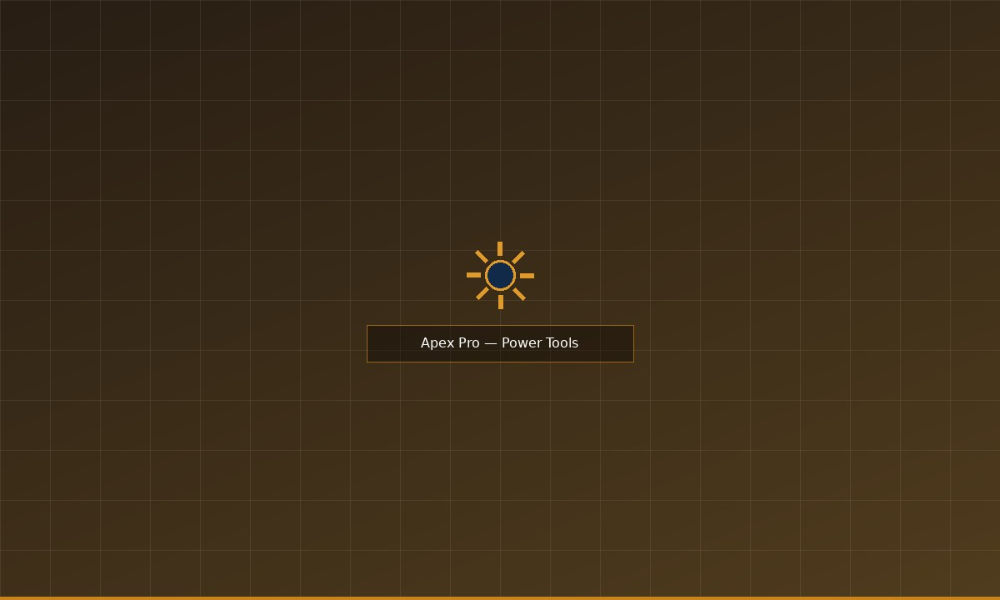
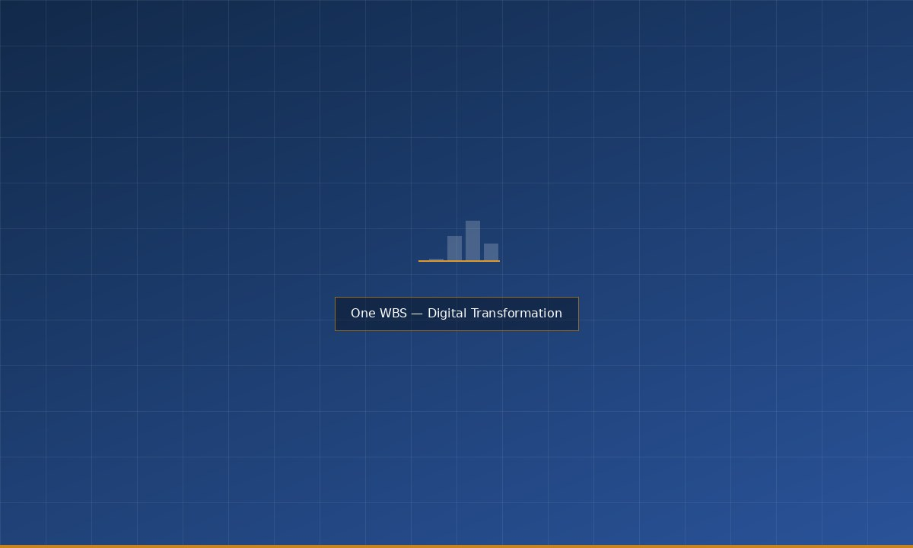

Transforming the Patient Journey
A major Irish hospital group commissioned WBS Consulting to redesign their outpatient appointment pathway, which had accumulated significant complexity over fifteen years of incremental change. The brief was to simplify the end-to-end experience for patients and reduce the administrative burden on clinical and administrative staff.
WBS delivered a comprehensive discovery report, a redesigned service blueprint, and a phased implementation roadmap — completing the engagement within the agreed twelve-week timeline and budget. The client signed off the programme in full.
"The team were responsive and professional throughout. The final report gave us a clear direction and the confidence to move forward with implementation."Discuss a Similar Project
— Programme Director, Hospital Group

Retail Reimagined: The Luximo App
Luximo, a mid-market Irish fashion retailer, needed a consumer-facing iOS and Android application in time for the Christmas trading season. With seven months from brief to launch, WBS Digital delivered a full e-commerce application including product browsing, wish-lists, basket, checkout, order tracking, and loyalty scheme integration.
The app launched on schedule across both platforms and was available to Luximo's customer base in time for the peak trading period. The project was delivered within budget and to the specification agreed at the outset of the engagement.
"WBS kept us on track and hit every milestone. Getting the app live before Christmas was critical for us and they delivered exactly what we needed."Discuss a Similar Project
— Digital Director, Luximo

The Apex Pro: Ergonomics for the Modern Workshop
WBS Manufacturing was commissioned by a European power tool OEM to design and manufacture the enclosure and grip assembly for a new cordless range targeting the professional and semi-professional market. The brief called for a robust, well-balanced design suitable for extended use, with the tooling and production volume to support a pan-European product launch.
WBS delivered the complete tooling programme on schedule, meeting all dimensional and material specifications. Production commenced at the Bray facility and initial batch quantities were delivered ahead of the client's distribution window.
"The Bray team understood the engineering demands of this product category from day one. Tooling was clean, production tolerances were consistently held."Discuss a Similar Project
— Supply Chain Director, OEM Client

One WBS: Our Digital Transformation Story
With three divisions operating from separate sites and on separate legacy systems, WBS undertook an internal programme to integrate its operations onto a single CRM and project management platform. The objective was to improve cross-divisional visibility, reduce administrative duplication, and create a single source of truth for client and project data.
The programme, led by WBS Digital with input from all three divisions, achieved full platform deployment within the planned timeframe. The new system is now live across the organisation, with staff across Dublin, Cork, and Wicklow working from a shared environment for the first time.
"The One WBS programme was a significant undertaking. Getting all three divisions onto a shared system required real commitment across the business, and the team delivered."Discuss a Similar Project
— Charlene Bodgit, Chief Executive Officer, WBS